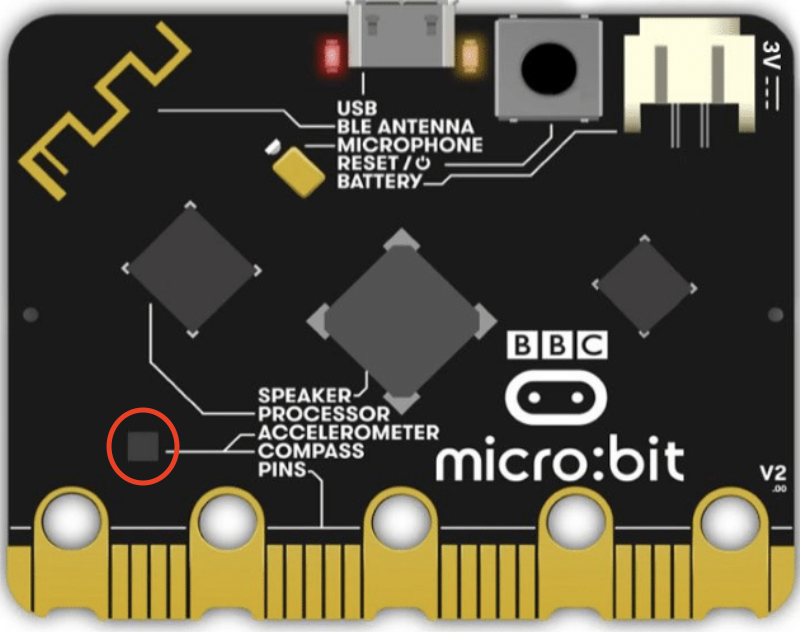
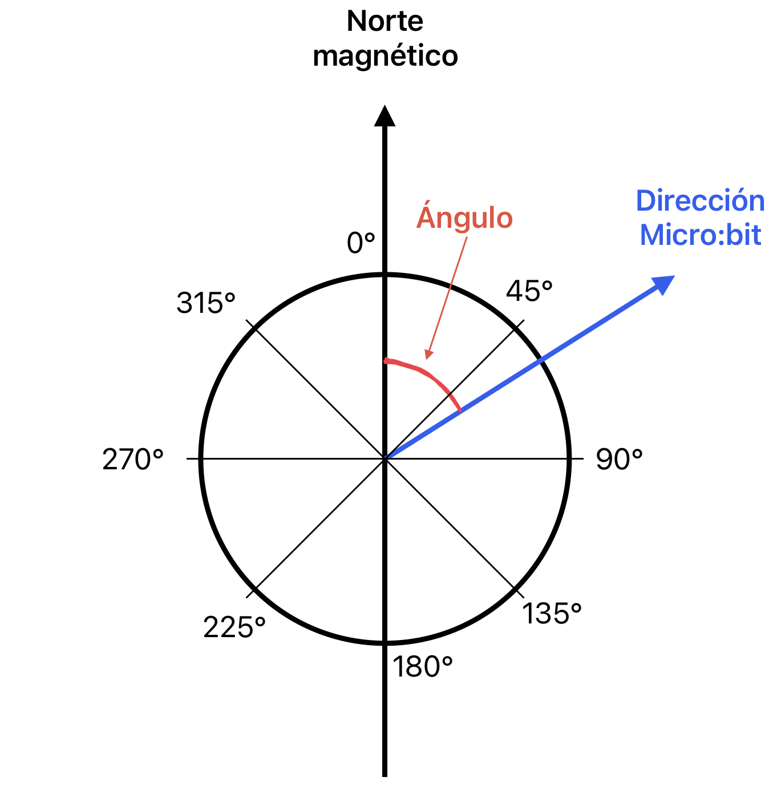
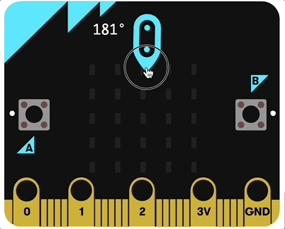
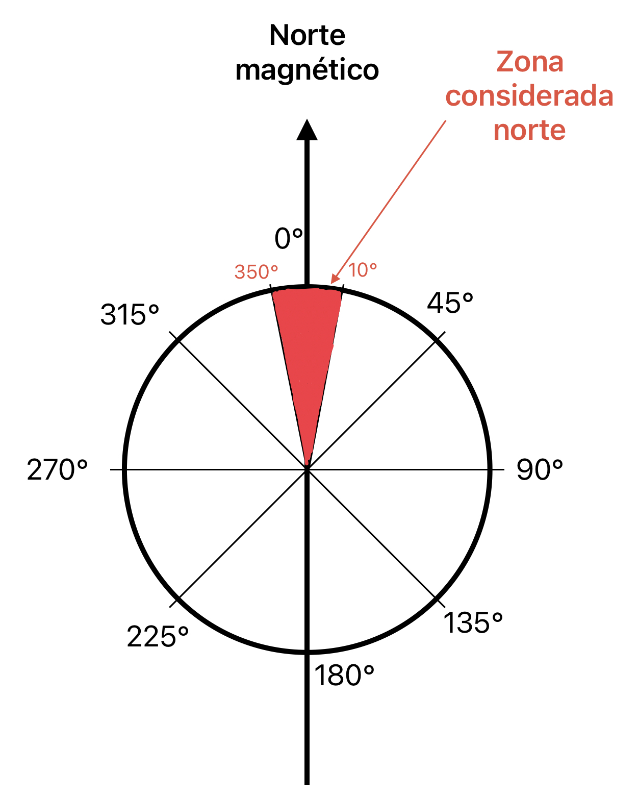

Prácticas
Un sensor magnético es un componente capaz de detectar campos magnéticos externos. Los campos magnéticos pueden ser creador por corrientes eléctricos, por imanes o simplemente ser el campo magnético natural terrestre.
Una de las grandes aplicaciones de este sensor es para saber la dirección a la que te diriges y de ese modo ayudarte a situarte en el entorno natural en el que te encuentres. Se calibran tomando como referencia el campo magnético terrestre, así, siempre puedes saber en qué dirección se encuentra el Norte, igual que una brújula.
La placa de Micro:bit incorpora un sensor magnético con el cual podremos obtener información sobre la dirección del norte y las fuerzas magnéticas. Se encuentra ubicado donde se indica en la imagen con el círculo rojo:

El sensor magnético de Micro:bit puede usarse para dos cosas:
- Medir la fuerza que tiene un campo magnético (en micro teslas - μT). Es útil para hacer mediciones en montajes con dispositivos electromagnéticos, aunque nosotros no lo usaremos de momento. Se utilizaría directamente este bloque de MakeCode, que nos devuelve el valor de la fuerza en μT:

- Dar información de brújula, indicando directamente el ángulo respecto al norte magnético de la Tierra. Se obtiene mediante este bloque de MakeCode:
En esta tarea nos centraremos en este último bloque de brújula, por lo que es importante que tengas en cuenta lo siguiente para saber usarlo bien:
El ángulo que devuelve ese bloque es el ángulo que forma la placa Micro:bit con la dirección del polo norte magnético (que es aproximadamente la misma que la del norte geográfico). En esta imagen puedes ver los diferentes ángulos que te puede devolver el bloque dirección de la brújula (º) según para donde apunte tu placa:

Como siempre, para fijar ideas y ayudarte antes de hacer esta tarea, vamos a hacer algunas prácticas previas:
Práctica 1 - Mostrar ángulo de la brújula
Esta primera práctica es muy sencilla. Consiste simplemente en mostrar en la pantalla de Micro:bit el ángulo de la brújula y comprobar que varía al mover la placa.
A estas alturas, ya deberías ser capaz de escribir el programa por tus propios medios, teniendo en cuenta que:
- El ángulo se debe escribir en la matriz LED.
- Debes actualizar todo el tiempo el ángulo, porque puede variar en cualquier instante.
Para comprobar si has escrito correctamente el programa, tienes que girar la placa y ver que el ángulo varía. Cuando hagas esta práctica con la placa real, solo tendrás que moverla para ver cómo cambia el ángulo y podrás comprobar que, si la apuntas justo hacia el norte, indicará cero grados. Pero, ¿cómo puedes girar la placa virtual que tienes en MakeCode?
Cuando utilices en tu código el bloque dirección de la brújula (º), automáticamente el icono de la Micro:bit virtual cambiará y le aparecerá una flecha:
Podrás entonces girar con el ratón el icono y será como si estuvieras girando la placa.
Como siempre, te dejo aquí el código correcto por si has tenido problemas para escribirlo:
 Si todo ha ido bien, el funcionamiento debería ser parecido a esto:
Si todo ha ido bien, el funcionamiento debería ser parecido a esto:

Práctica 2 - Brújula con flecha
Para hacer esta segunda práctica, queremos mostrar una flecha hacia arriba en la matriz de LEDs, cuando la placa esté orientada hacia el norte. Si se orienta en cualquier otra dirección, la matriz debe quedar totalmente apagada.
Para hacer que aparezca una flecha en la pantalla, puedes usar el bloque que te permite dibujar el icono y dibujar una flecha, o puedes usar un bloque de MakeCode que pinta una flecha en la matriz LED: Está en la categoría Básico y es este bloque:
Si dejas puesto "Norte", la flecha apuntará hacia arriba, que es justo lo que queremos.
Cuando la placa apunta justo al norte, el bloque dirección de la brújula (º) valdrá cero. Sin embargo, apuntar justo a cero grados norte es difícil y la flecha sólo aparecería un instante en la pantalla. Para evitar eso, consideraremos que estamos apuntando al norte si el ángulo de la brújula está en una franja de ±10º, como puedes ver en este gráfico:

Por consiguiente, consideraremos que la placa apunta al norte si el ángulo es mayor de 350º o bien es menor de 10º.
Como tenemos que comprobar (bloque si entonces - si no) si se cumple una condición o la otra, tendremos que usar un bloque que nos devuelve verdadero si una cualquiera de las condiciones que lleva dentro es verdadera. Es este bloque:
¿Te atreves a escribir el código sin ayuda? Inténtalo y revisa la solución si tienes problemas: